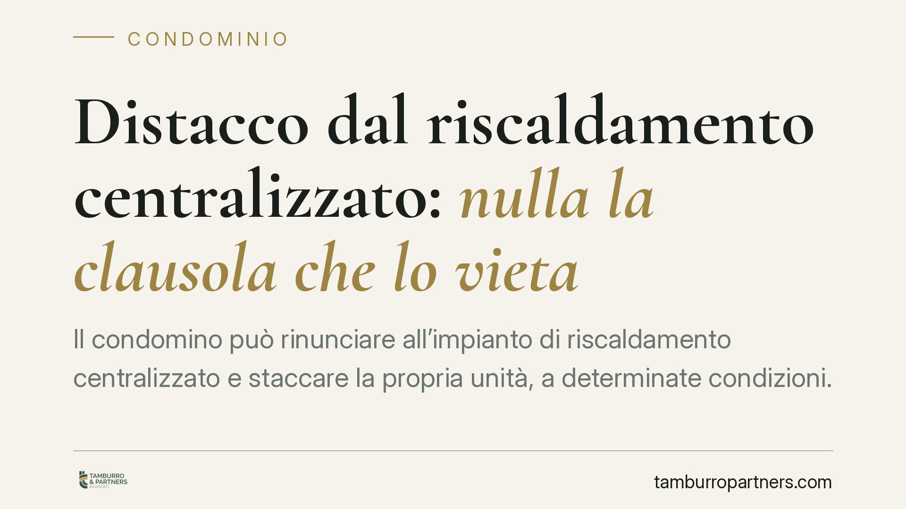

Distacco dal riscaldamento centralizzato: nulla la clausola che lo vieta
Il condomino può rinunciare all'impianto di riscaldamento centralizzato e staccare la propria unità, a determinate condizioni. La giurisprudenza considera nulla ogni clausola regolamentare che lo vieti in assoluto. Chi si distacca, però, non è liberato da ogni onere: resta tenuto a concorrere alle spese di conservazione e di messa a norma dell'impianto comune. Vediamo cosa cambia davvero.

Il principio
Un condomino può decidere di non utilizzare più il riscaldamento centralizzato e di dotare la propria unità di un impianto autonomo. È il cosiddetto "distacco". La facoltà esiste, ma è condizionata: non deve derivarne un notevole squilibrio nel funzionamento dell'impianto comune, né un aggravio di spesa per gli altri condomini.
Su questo punto la posizione della Cassazione è costante: è nulla qualsiasi clausola di regolamento condominiale che vieti in modo assoluto il distacco, anche se il regolamento è stato approvato all'unanimità. La nullità, a differenza dell'annullabilità, può essere fatta valere senza limiti di tempo e da chiunque vi abbia interesse.
Inquadramento normativo
La norma di riferimento è l'art. 1118, comma 4, del Codice civile, introdotto dalla riforma del condominio (Legge 11 dicembre 2012, n. 220). La disposizione stabilisce che il condomino può rinunciare all'utilizzo dell'impianto centralizzato di riscaldamento o condizionamento "se dal suo distacco non derivano notevoli squilibri di funzionamento o aggravi di spesa per gli altri condomini".
La stessa norma precisa che, pur in caso di distacco, il rinunciante resta tenuto a concorrere al pagamento delle sole spese per la manutenzione straordinaria dell'impianto e per la sua conservazione e messa a norma. È la codificazione di un orientamento che la Cassazione aveva già maturato prima della riforma e che continua a ribadire.
Come si accerta lo squilibrio
Il nodo pratico è quasi sempre probatorio. La giurisprudenza richiede che l'assenza di notevoli squilibri e di aggravi di spesa sia dimostrata, di regola, attraverso una relazione tecnica redatta da un professionista abilitato.
L'onere di provare che il distacco non pregiudica il sistema grava sul condomino che intende distaccarsi: è lui a introdurre un'eccezione al funzionamento ordinario dell'impianto comune e deve supportarla con dati tecnici (dispersioni termiche, dimensionamento residuo delle caldaie, effetti sulle colonne montanti). In mancanza di una documentazione adeguata, l'opposizione del condominio tende a reggere.
Va distinta l'ipotesi in cui il distacco sia già avvenuto senza i requisiti di legge: in quel caso il condomino può restare obbligato a contribuire anche alle spese di gestione, non solo a quelle di conservazione.
Spese: cosa è dovuto e cosa no
La distinzione è netta e va tenuta a mente:
- Non sono dovute le spese di consumo (il combustibile, l'energia effettivamente utilizzata dall'impianto), proprio perché il distaccato non ne fruisce.
- Restano dovute le spese di conservazione, di manutenzione straordinaria e di messa a norma dell'impianto. L'impianto centralizzato resta un bene comune e il condomino continua a esserne comproprietario.
Un tema spesso trascurato riguarda i costi dell'istruttoria tecnica e della progettazione del distacco (perizia, interventi sulle colonne, ripristini): secondo l'impostazione prevalente gravano sul condomino che se ne avvantaggia, non sulla collettività condominiale.
Cosa cambia in concreto
Per l'amministratore. Non può rifiutare a priori il distacco richiamando una clausola di divieto: quella clausola è priva di effetti. Deve però pretendere la relazione tecnica e, in caso di distacco legittimo, rimodulare il riparto escludendo il distaccato dalle sole spese di consumo.
Per l'assemblea. Una delibera che neghi il distacco in presenza dei requisiti di legge, o che continui ad addebitare al distaccato le spese di consumo, è esposta a contestazione. Le delibere di riparto difformi dai criteri di legge sono impugnabili entro il termine di trenta giorni previsto dall'art. 1137 del Codice civile.
Per il condomino. La facoltà di distacco esiste, ma non è automatica: senza prova tecnica dell'assenza di squilibri e aggravi, l'operazione è fragile. E il distacco non azzera gli obblighi verso l'impianto comune.
Cosa fare in concreto
- Prima del distacco, acquisisci una relazione tecnica di professionista abilitato che attesti l'assenza di notevoli squilibri e di aggravi di spesa.
- Comunica formalmente l'intenzione all'amministratore, allegando la documentazione tecnica, prima di eseguire i lavori.
- Verifica che il nuovo riparto escluda le spese di consumo ma mantenga quelle di conservazione e manutenzione straordinaria.
- Considera che una clausola regolamentare di divieto assoluto è nulla e non vincola: va valutata la sua inefficacia, non necessariamente la sua impugnazione.
- Ricorda che le delibere di riparto non conformi ai criteri di legge sono impugnabili entro i termini stabiliti dall'ordinamento.
---
Contributo informativo a cura di Tamburro & Partners Avvocati – Avv. Giuseppe Tamburro. Non costituisce parere legale.
Ogni condominio ha una storia a sé.
Se gestisci un'amministrazione e vuoi un confronto su una specifica questione condominiale, scrivi allo studio. Ti rispondiamo entro un giorno lavorativo.